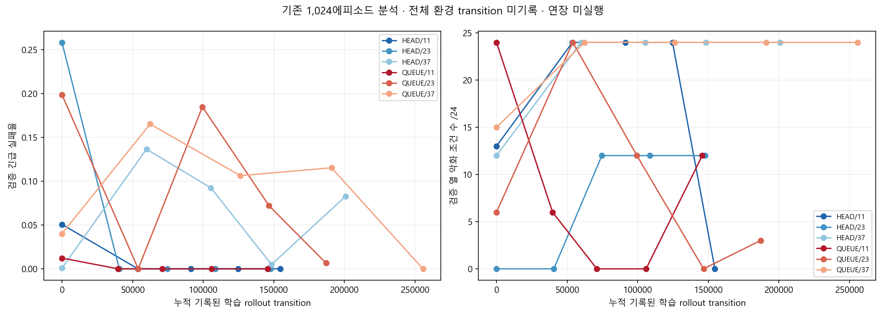
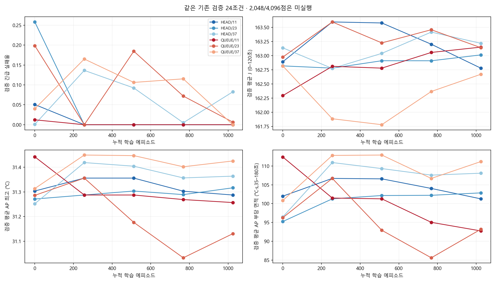
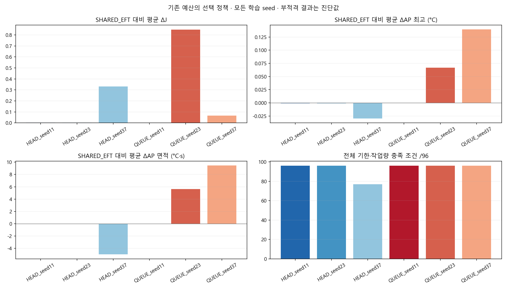
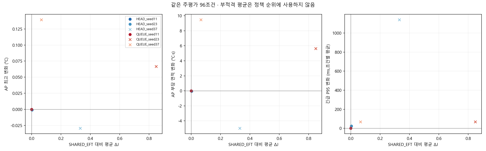
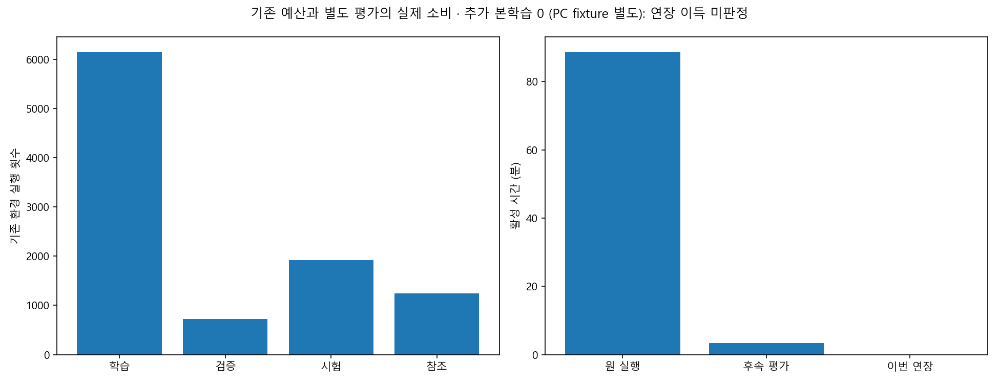

?? ?? ? ??? ??? ? ?? CSV ? ?? CSV ? ?? CSV ? ?? ?? ??
기존 1,024에피소드 결과. 연장 0회, 효과 미판정. 학습량 부족·수렴·강화학습 일반 실패를 확정하지 않는다.
전체 환경 transition은 미기록이다. 학습 rollout과 optimizer 반복 표본 제시를 구분한다. 확인 자료·PC 수치를 실기기 절감으로 확대하지 않는다.




